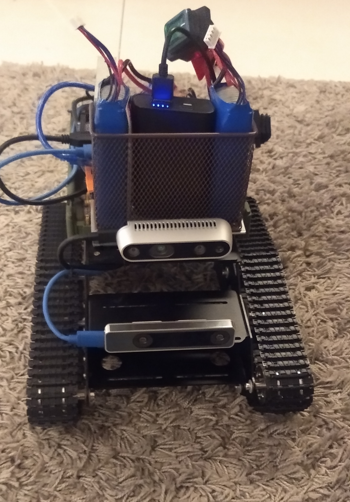

Tank Drive Robot

This is a tank drive system robot. It runs on a single board computer(Nvidia jetson nano interchangeably raspberry pi as well), and has various sensors to aid its naviagtion. It can also be driven remotely using a wireless joystick on the client nodes.
It runs RTABmap Slam (Vision based slam) for mapping navigtion within environments. Sensors such as intel d435i rgbd camera helps with localization whithin the map.